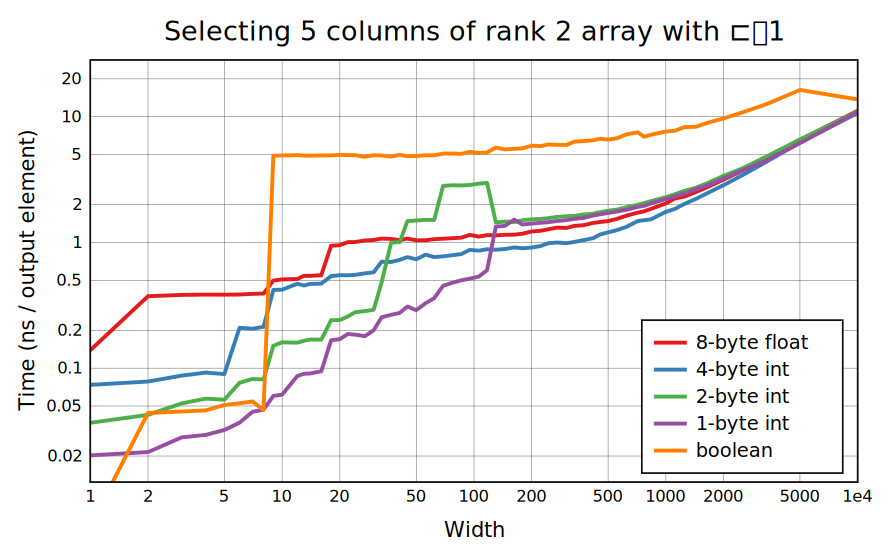
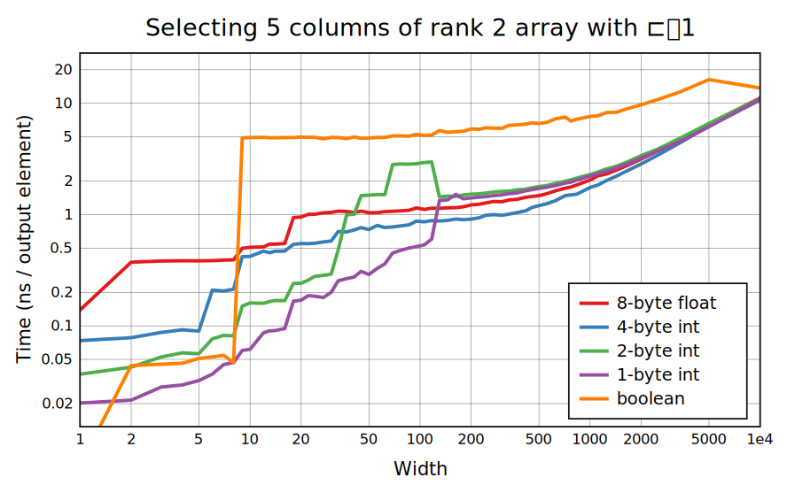

CBQN uses AVX2 for most cases of selection, with shuffles on small 𝕩 sizes and the gather instruction on larger ones (unfortunately gather is slower than scalar code prior to Skylake in 2015). AVX2 can shuffle 16 bytes or 8 4-byte values in one instruction, giving the various steps as BQN blends more registers together. The 16KB benchmark shows these small sizes better where the 1e6-element benchmark is limited by write bandwidth. selection from a boolean array is usually slower because it requires reading the right byte from memory and then picking out the right bit within it, but for larger 𝕩 it takes up less cache space and can be faster. For a small 𝕩 but large 𝕨, 𝕩 is temporarily converted to 1-byte values so that it runs at the same speed as 1-byte selection.
The permutation benchmark doesn't reveal much more, but does show degraded performance for booleans, because when the data is no longer than the indices it's not helpful to do the 1-byte conversion any more.
For odd-size cells, CBQN has a system of movement functions that work like memcpy but are each optimized for a range of lengths (of course, memcpy itself is used for large enough cells). With function call overhead these are much slower than the dedicated code used for type-width cells.
Currently ⊏⎉1 just calls ⊠for each row.


 
